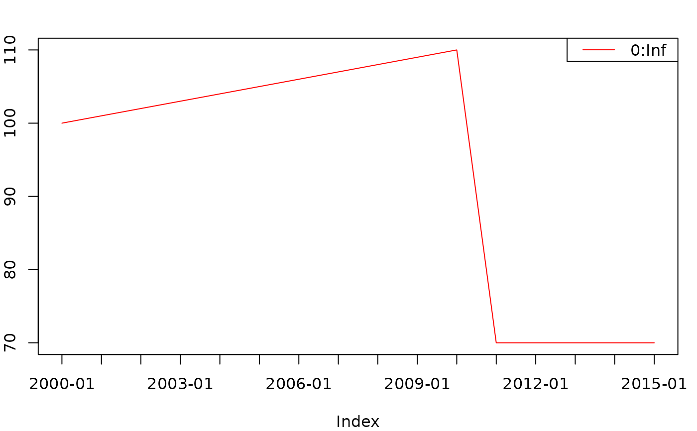
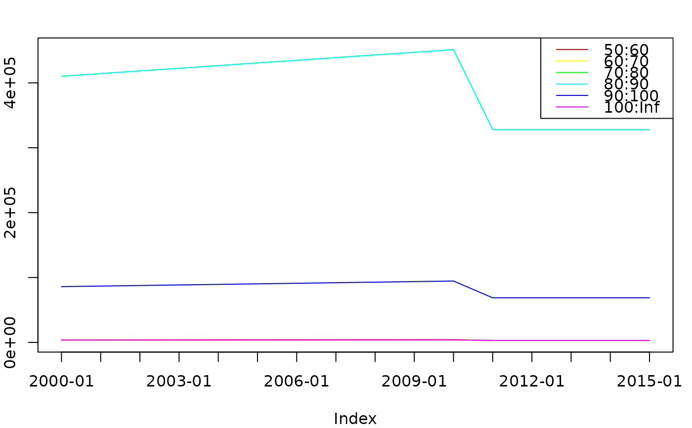

action_renewal.RdAdd renewal / initialconditions to a g3 model
g3a_renewal_vonb_recl(
Linf = g3_parameterized('Linf', value = 1, by_stock = by_stock),
K = g3_parameterized('K', value = 1, by_stock = by_stock),
recl = g3_parameterized('recl', by_stock = by_stock),
recage = g3_parameterized('recage', by_stock = FALSE, optimise = FALSE),
by_stock = TRUE)
g3a_renewal_vonb_t0(
Linf = g3_parameterized('Linf', value = 1, by_stock = by_stock),
K = g3_parameterized('K', value = 1, by_stock = by_stock),
t0 = g3_parameterized('t0', by_stock = by_stock),
by_stock = TRUE)
g3a_renewal_initabund(
scalar = g3_parameterized('init.scalar', value = 1, by_stock = by_stock),
init = g3_parameterized('init', value = 1, by_stock = by_stock, by_age = TRUE),
M = g3_parameterized('M', by_stock = by_stock, by_age = TRUE),
init_F = g3_parameterized('init.F', by_stock = by_stock_f),
recage = g3_parameterized('recage', by_stock = FALSE, optimise = FALSE),
proportion_f = ~1,
by_stock = TRUE,
by_stock_f = FALSE)
############################# g3a_initialconditions
g3a_initialconditions(stock, num_f, wgt_f, run_f = ~cur_time == 0L,
run_at = g3_action_order$initial)
g3a_initialconditions_normalparam(
stock,
factor_f = g3a_renewal_initabund(by_stock = by_stock),
mean_f = g3a_renewal_vonb_t0(by_stock = by_stock),
stddev_f = g3_parameterized('init.sd', value = 10,
by_stock = by_stock, by_age = by_age),
alpha_f = g3_parameterized('walpha', by_stock = wgt_by_stock),
beta_f = g3_parameterized('wbeta', by_stock = wgt_by_stock),
age_offset = quote( cur_step_size ),
by_stock = TRUE,
by_age = FALSE,
wgt_by_stock = TRUE,
run_f = ~cur_time == 0L,
run_at = g3_action_order$initial)
g3a_initialconditions_normalcv(
stock,
factor_f = g3a_renewal_initabund(by_stock = by_stock),
mean_f = g3a_renewal_vonb_t0(by_stock = by_stock),
cv_f = g3_parameterized('lencv', by_stock = by_stock, value = 0.1,
optimise = FALSE),
alpha_f = g3_parameterized('walpha', by_stock = wgt_by_stock),
beta_f = g3_parameterized('wbeta', by_stock = wgt_by_stock),
age_offset = quote( cur_step_size ),
by_stock = TRUE,
by_age = FALSE,
wgt_by_stock = TRUE,
run_f = ~cur_time == 0L,
run_at = g3_action_order$initial)
############################# g3a_renewal
g3a_renewal(stock, num_f, wgt_f, run_f = ~TRUE,
run_at = g3_action_order$renewal)
g3a_renewal_normalparam(
stock,
factor_f = g3_parameterized('rec',
by_stock = by_stock,
by_year = TRUE,
scale = g3_parameterized(
name = 'rec.scalar',
by_stock = by_stock),
ifmissing = g3_parameterized(
name = 'rec.proj',
optimise = FALSE,
by_stock = by_stock )),
mean_f = g3a_renewal_vonb_t0(by_stock = by_stock),
stddev_f = g3_parameterized('rec.sd', value = 10, by_stock = by_stock),
alpha_f = g3_parameterized('walpha', by_stock = wgt_by_stock),
beta_f = g3_parameterized('wbeta', by_stock = wgt_by_stock),
by_stock = TRUE,
wgt_by_stock = TRUE,
run_age = quote(stock__minage),
run_projection = TRUE,
run_step = 1,
run_f = NULL,
run_at = g3_action_order$renewal)
g3a_renewal_normalcv(
stock,
factor_f = g3_parameterized('rec',
by_stock = by_stock,
by_year = TRUE,
scale = g3_parameterized(
name = 'rec.scalar',
by_stock = by_stock),
ifmissing = g3_parameterized(
name = 'rec.proj',
optimise = FALSE,
by_stock = by_stock )),
mean_f = g3a_renewal_vonb_t0(by_stock = by_stock),
cv_f = g3_parameterized('lencv', by_stock = by_stock, value = 0.1,
optimise = FALSE),
alpha_f = g3_parameterized('walpha', by_stock = wgt_by_stock),
beta_f = g3_parameterized('wbeta', by_stock = wgt_by_stock),
by_stock = TRUE,
wgt_by_stock = TRUE,
run_age = quote(stock__minage),
run_projection = TRUE,
run_step = 1,
run_f = NULL,
run_at = g3_action_order$renewal)
############################# g3a_otherfood
g3a_otherfood(
stock,
num_f = g3_parameterized('of_abund', by_year = TRUE, by_stock = by_stock,
scale = g3_parameterized(
'of_abund.step', value = 1, by_step = TRUE, by_stock = by_stock),
ifmissing = "of_abund.proj" ),
wgt_f = g3_parameterized('of_meanwgt', by_stock = by_stock),
by_stock = TRUE,
force_lengthvector = !any(grepl("__midlen$", all.vars(num_f))),
run_f = quote( cur_time <= total_steps ),
run_at = g3_action_order$initial)
g3a_otherfood_normalparam(
stock,
factor_f = g3_parameterized(
'of_abund', by_year = TRUE, by_stock = by_stock,
scale = g3_parameterized(
'of_abund.step', value = 1, by_step = TRUE, by_stock = by_stock),
ifmissing = "of_abund.proj" ),
mean_f = g3a_renewal_vonb_t0(by_stock = by_stock),
stddev_f = g3_parameterized('init.sd', value = 10,
by_stock = by_stock, by_age = by_age),
alpha_f = g3_parameterized('walpha', by_stock = wgt_by_stock),
beta_f = g3_parameterized('wbeta', by_stock = wgt_by_stock),
by_stock = TRUE,
by_age = FALSE,
wgt_by_stock = TRUE,
run_f = quote( cur_time <= total_steps ),
run_at = g3_action_order$initial)
g3a_otherfood_normalcv(
stock,
factor_f = g3_parameterized(
'of_abund', by_year = TRUE, by_stock = by_stock,
scale = g3_parameterized(
'of_abund.step', value = 1, by_step = TRUE, by_stock = by_stock),
ifmissing = "of_abund.proj" ),
mean_f = g3a_renewal_vonb_t0(by_stock = by_stock),
cv_f = g3_parameterized('lencv', by_stock = by_stock, value = 0.1,
optimise = FALSE),
alpha_f = g3_parameterized('walpha', by_stock = wgt_by_stock),
beta_f = g3_parameterized('wbeta', by_stock = wgt_by_stock),
by_stock = TRUE,
by_age = FALSE,
wgt_by_stock = TRUE,
run_f = quote( cur_time <= total_steps ),
run_at = g3_action_order$initial)The g3_stock to apply to
formula that produces a lengthgroup vector of number of individuals for the current age/area/... length group.
formula that produces a lenghgroup vector of mean weight for the current age/area/... length group.
Integer order that actions will be run within model, see g3_action_order.
formula substituted into normalparam calcuations, see below.
formula substituted into normalcv calcuations, basically stddev_f = mean_f * cv_f, see below.
Replace age with age - age_offset in mean_f. Used to simulate initialconditions at time "-1".
Should we assume that num_f is a constant, and needs repeating enough times to turn into a length vector?
Age to run renewals for, used as age == (run_age) into default run_f
Boolean. Run renewal in projection years? If false adds !cur_year_projection into default run_f
Which step to perform renewal in, or NULL for continuous renewal. Adds cur_step == (run_step) into default run_f
formula specifying a condition for running this action, For initialconditions defaults to first timestep. For renewal, the default is a combination of run_age, run_step & run_projection. For otherfood, the default is to always run, apart from when the model is ending.
formula substituted into vonb calcuations, see below.
formula substituted into initial abundance and vonb calcuations, see below.
formula substituted into initial abundance calcuations, see below.
Controls how parameters are grouped, see g3_parameterized
All of the following actions will renew stock in a model. The differences are when and what they apply to by default:
g3a_initialconditions_*Will run at the start of the model, building an inital state of all ages
g3a_renewal_*Will run at every step but only for the minimal age, adding new recruits as an alternative to g3a_spawn()
g3a_otherfood_*Will run at every step, replacing the previous state, creating a non-dynamic stock for predators to consume
Specifying the quantities and mean-weights in each case works identically.
A model can have any number of g3a_renewal_* actions, so long as the
calling arguments are different. For instance, run_f = ~age == 5 and
run_f = ~age == 7.
The g3a_renewal_* actions will define the following stock instance variables for stock:
Extra individuals added to the stock
Mean weight of added individuals
A formula object representing $$ L_{\infty} (1 - e^{-\kappa (a - a_{0} + \frac{\log(1 - L_{0}/L_{\infty})}{\kappa} )}) $$
Linf argument, by default model parameter named (stock).Linf
K argument, by default model parameter named (stock).K
recl argument, by default model parameter named (stock).recl
recage argument, by default model parameter named recage
NB: g3a_initialconditions_normalparam will replace \(a\) with \(a - \Delta{t}\), see age_offset
A formula object representing $$ L_{\infty} (1 - e^{-\kappa (a - t_{0}) }) $$
Linf argument, by default model parameter named (stock).Linf
K argument, by default model parameter named (stock).K
t0 argument, by default model parameter named (stock).t0
NB: g3a_initialconditions_normalparam will replace \(a\) with \(a - \Delta{t}\), see age_offset
A formula object representing $$ p s_{0} s_{a} e^{-1 (M + F_{0}) (a - a_{0})} $$
scalar argument, by default model parameter named (stock).init.scalar
init argument, by default model parameter named (stock).init.(age)
M argument, by default model parameter named (stock).M.(age)
init_F argument, by default model parameter named init.F
recage argument, by default model parameter named recage
proportion argument, by default 1
An action (i.e. list of formula objects) that will, for the given stock, iterate over each area/age/etc. combination, and generate a lengthgroup vector of new individuals and weights using num_f and wgt_f.
renewal will add fish to the existing stock, whereas initialconditions & otherfood will replace any previous values.
As g3a_initialconditions / g3a_renewal, but the following formulae are used to calculate abundance (\(N\)) and mean weight (\(W\)):
$$n = {dnorm}(L, \mu, \sigma)$$ $$N = F 10000 \frac{n}{\sum n}$$ $$W = \alpha L^{\beta}$$
Midlength of all length groups for current area/age/...
factor_f argument, by default output of g3a_renewal_initabund
mean_f argument, by default output of g3a_renewal_vonb_t0
stddev_f argument, by default model parameter named (stock).(init|rec).sd
alpha_f argument, by default model parameter named (stock).walpha
beta_f argument, by default model parameter named (stock).wbeta
As g3a_initialconditions / g3a_renewal, but the following formulae are used to calculate abundance (\(N\)) and mean weight (\(W\)):
$$n = e^{-(\frac{L - \mu}{\mu * {CV}})^2 / 2}$$ $$N = F 10000 \frac{n}{\sum n}$$ $$W = \alpha L^{\beta}$$
Midlength of all length groups for current area/age/...
factor_f argument, by default output of g3a_renewal_initabund
mean_f argument, by default output of g3a_renewal_vonb_t0
cv_f argument, by default model parameter named (stock).lencv
alpha_f argument, by default model parameter named (stock).walpha
beta_f argument, by default model parameter named (stock).wbeta
stocks <- list(
imm = g3_stock(c('ling', maturity = "imm"), seq(10, 100, 10)) %>% g3s_age(3, 7),
mat = g3_stock(c('ling', maturity = "mat"), seq(10, 100, 10)) %>% g3s_age(5, 10) )
actions <- list(
g3a_time(2000, 2000),
g3a_initialconditions_normalcv(stocks$imm),
g3a_initialconditions_normalcv(stocks$mat),
NULL)
model_fn <- g3_to_r(c(actions, list(
g3a_report_detail(actions) )))
attr(model_fn, 'parameter_template') |>
g3_init_val("init.F", 0.4) |>
g3_init_val("ling_imm.Linf", 80) |>
g3_init_val("ling_mat.Linf", 160) |>
g3_init_val("ling_*.K", 90) |>
g3_init_val("ling_*.t0", 0) |>
g3_init_val("ling_*.lencv", 0.1) |>
g3_init_val("ling_imm.init.#", 3:7 * 100) |>
g3_init_val("ling_mat.init.#", 5:10 * 200) |>
g3_init_val("ling_*.init.scalar", 200) |>
g3_init_val("ling_*.walpha", 2.275e-06) |>
g3_init_val("ling_*.wbeta", 3.2020) |>
g3_init_val("ling_*.M.#", 0.15) |>
identity() -> params.in
r <- model_fn(params.in)
g3_array_plot(attr(r, "dstart_ling_imm__num")[,,time=1])
g3_array_plot(attr(r, "dstart_ling_mat__num")[,,time=1])
## Plots
par(mar = c(4,2,2,1), cex.main = 1)
curve(g3_eval(g3a_renewal_vonb_t0(Linf = 20, K = 0.8, t0 = 0), age = x),
0, 10, col = 2, xlab = "age", main = "g3a_renewal_vonb_t0(Linf = 20, K = 0.8..1.4, t0 = 0)")
curve(g3_eval(g3a_renewal_vonb_t0(Linf = 20, K = 1.0, t0 = 0), age = x),
0, 10, col = 1, add = TRUE)
curve(g3_eval(g3a_renewal_vonb_t0(Linf = 20, K = 1.2, t0 = 0), age = x),
0, 10, col = 3, add = TRUE)
curve(g3_eval(g3a_renewal_vonb_t0(Linf = 20, K = 1.4, t0 = 0), age = x),
0, 10, col = 4, add = TRUE)
## Otherfood
# "Otherfood" stocks are defined in a similar manner to any other stock
# Note that _normalparam & _normalcv need both length & age dimensions
other_wgt <- g3_stock('other_wgt', 0)
other_cv <- g3_stock('other_cv', seq(50, 100, by = 10)) %>% g3s_age(5,10)
actions <- list(
g3a_time(2000, 2010),
# Will get other_wgt.of_abund.1998.1, other_wgt.of_meanwgt parameters
g3a_otherfood(other_wgt),
# Use standard vonB parameters (Linf/K/t0) to define abundance
g3a_otherfood_normalcv(other_cv),
NULL)
model_fn <- g3_to_r(c(actions, list(
g3a_report_detail(actions) )))
attr(model_fn, 'parameter_template') |>
g3_init_val("other_cv.Linf", 80) |>
g3_init_val("other_cv.K", 90) |>
g3_init_val("other_cv.t0", 0) |>
g3_init_val("other_cv.of_abund.#", 100:110) |>
g3_init_val("other_wgt.of_abund.#", 100:110) |>
g3_init_val("other_wgt.of_abund.step.#", 1) |>
g3_init_val("other_cv.of_abund.proj", 80) |>
g3_init_val("other_wgt.of_abund.proj", 70) |>
g3_init_val("project_years", 5) |>
identity() -> params.in
r <- model_fn(params.in)
g3_array_plot(t(attr(r, "dstart_other_wgt__num")))

g3_array_plot(t(attr(r, "dstart_other_cv__num")[,age="age7",]))
